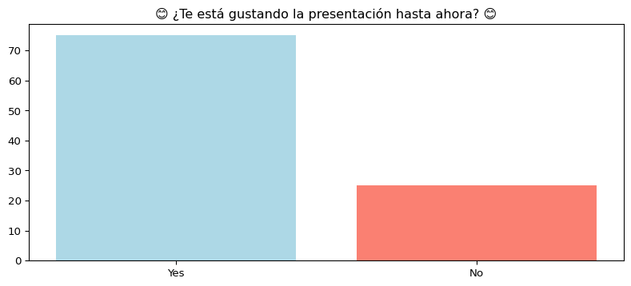
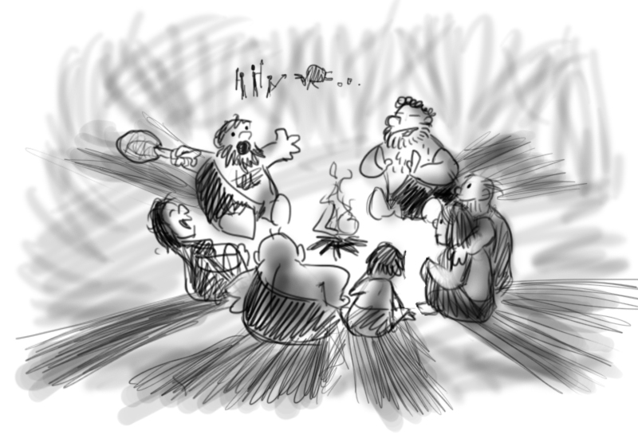
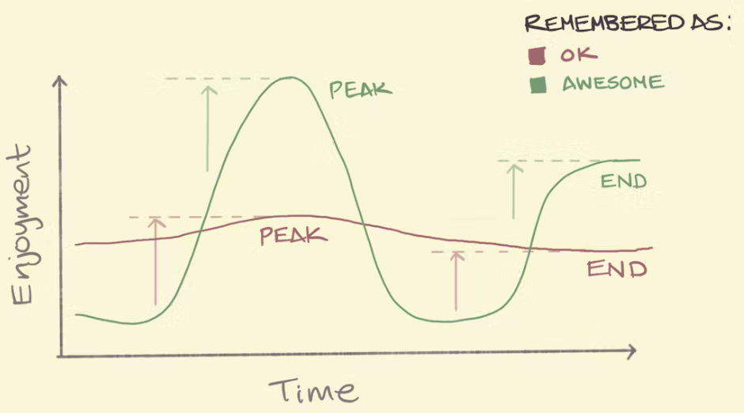

A.I. + DataStorytelling
Sesión 4
2025-03-27
Agenda
No
Nope
Jamás

¿Qué es el Storytelling?


🔥 Las historias son la primera tecnología humana
Esos cerebros tan hackables…

Regla del máximo y final (Peak-End Rule)

Rating de Game of Thrones, por Kelvin Neo
Narrativa
Usar trucos de Storytelling (narrativa) para crear presentaciones que serán recordadas y que causarán impacto

🎭 Las emociones generan acciones
El mejor ejemplo

¿Podemos hacer que millones de personas compartan estadísticas en redes sociales?

Ejemplos
 🔢 No compartas números
🔢 No compartas números
 🪶Comparte una historia
🪶Comparte una historia
(C) Storytelling with Data, por Cole Nussbaumer Knaflic.
Usar chatbots de IA para:
- Analogías y ejemplos
- Mejores traducciones
- Prompts para crear imágenes
- No busques imágenes, créalas!

Explicar menos y mostrar más

Ejemplos
❌ Mal Gráfico

✅ Buen Gráfico
Datasaurus

4 Pilares Visualización - Noah Iliinsky
- Propósito: Define la meta.
- Contenido: Datos relevantes.
- Estructura: Organización clara.
- Formato: Gráfico adecuado.

(C) Noah Iliinsky: “Four Pillars of Visualization” - Youtube.
Streamlit
Es una herramienta de código abierto que facilita la creación de aplicaciones web interactivas utilizando únicamente Python.

Streamlit: Ejemplo